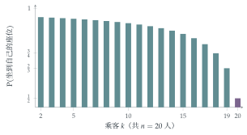

STEP II 2021，第 11 題
繼續之前，請先閱讀題目（原題為英文）。題目載於 OCR 提供下載的 2021 年 STEP 試卷（zip 檔案）內的 STEP II 試卷： www.ocr.org.uk/Images/696588-2021-past-papers.zip
引子
一百名乘客登上一班滿座的飛機。第一位乘客遺失了登機證，於是隨便找個座位坐下。其後每位乘客，若自己的座位仍然空着就坐自己的座位，否則就在餘下的空位中隨機選一個。最後一位乘客坐到自己座位的概率（probability）是多少？混亂或會蔓延至整架飛機，所以你可能預期這個概率很小；又或者大部分乘客根本不受影響，概率應該接近 \(1\)。
無論乘客人數是多少，答案都恰好是 \(\frac12\)。本題以遞推關係（recurrence）和歸納法（induction）證明這個結果。不過，還有一個利用對稱性（symmetry）的漂亮論證，一句話就能說完；它解釋了為甚麼答案是 \(\frac12\)，更可讓你立即寫出任何一位乘客的答案。
動筆之前
列出所有可能發生的情況，求出 \(P_2\) 和 \(P_3\)。
若有兩個座位，\(T_1\) 會坐 \(S_1\)（這時 \(T_2\) 坐到 \(S_2\)）或 \(S_2\)，兩者的概率各為 \(\frac12\)：\(P_2 = \frac12\)。若有三個座位：如果 \(T_1\) 坐 \(S_1\)（概率為 \(\frac13\)），人人都沒有問題；如果 \(T_1\) 坐 \(S_3\)，\(T_3\) 就坐不到自己的座位；如果 \(T_1\) 坐 \(S_2\)，則 \(T_2\) 要在 \(S_1\) 和 \(S_3\) 之間隨機選擇，而 \(T_3\) 只有在 \(T_2\) 選中 \(S_1\) 時才沒有問題。所以 \(P_3 = \frac13 + \frac13\cdot\frac12 = \frac12\)。
逐步解題
階段 1 遞推關係
假設 \(T_1\) 坐了 \(S_k\)，其中 \(2 \leq k \leq n - 1\)。乘客 \(T_2, \ldots, T_{k-1}\) 會怎樣？當 \(T_k\) 到達時，哪些座位是空的？這個局面與一列較小的列車相比又如何？
乘客 \(T_2, \ldots, T_{k-1}\) 發現自己的座位空着，便坐了下來。當 \(T_k\) 到達時，空着的座位是 \(S_1\) 和 \(S_{k+1}, \ldots, S_n\)：共有 \(n - k + 1\) 個。\(T_k\) 從中隨機選一個，此後每位乘客若自己的座位空着就坐自己的座位，否則就隨機選一個。這正是有 \(n - k + 1\) 個座位的原來問題，\(T_k\) 扮演第一位乘客的角色，而 \(S_1\) 則扮演 \(T_k\)「自己的」座位的角色（即一旦被選中，一切便回復正常的那個座位）。因此，\(T_n\) 坐到 \(S_n\) 的條件概率（conditional probability）是 \(P_{n-k+1}\)。
現在按 \(T_1\) 所坐的座位分情況考慮，每個座位的概率都是 \(\frac1n\)：坐 \(S_1\) 必定成功，坐 \(S_n\) 必定失敗，而坐 \(S_k\) 則給出 \(P_{n-k+1}\)。所以 \[P_n = \frac1n\Bigl(1 + 0 + \sum_{k=2}^{n-1}P_{n-k+1}\Bigr) = \frac1n\Bigl(1 + \sum_{r=2}^{n-1}P_r\Bigr). \qed\]
階段 2 答案
\(P_2 = P_3 = \frac12\)。猜出 \(P_n\)，並用強歸納法（strong induction）證明。
斷言：對所有 \(n \geq 2\)，\(P_n = \frac12\)。當 \(n = 2\) 時斷言成立。若 \(P_r = \frac12\) 對 \(2 \leq r \leq n - 1\) 成立，則 \[P_n = \frac1n\Bigl(1 + \frac{n - 2}{2}\Bigr) = \frac1n\cdot\frac n2 = \frac12. \qed\]
階段 3 倒數第二位乘客
試找一個更巧妙的論證。到最後，留給 \(T_n\) 的是哪個座位？有可能是 \(S_2\) 嗎？
最後留給 \(T_n\) 的座位不是 \(S_1\) 就是 \(S_n\)。它不可能是 \(S_k\)（其中 \(2 \leq k \leq n - 1\)），因為 \(T_k\) 早就會把它坐了。而在此之前的每一次隨機選擇，對 \(S_1\) 和 \(S_n\) 都是對稱的：每當有被佔了座位的乘客要選位，\(S_1\) 和 \(S_n\) 被選中的機會均等。兩者之中先被選中的那個決定了結局，所以兩者同樣可能成為最後剩下的座位：\(P_n = \frac12\)。
同一個論證適用於任何一位乘客 \(T_k\)，\(k \geq 2\)。只有當某位較早的乘客佔了 \(T_k\) 的座位，他們才會失去自己的座位。座位被佔的連鎖反應會一直持續，直至有人選中 \(S_1\) 為止；在 \(S_1, S_k, S_{k+1}, \ldots, S_n\) 這些座位之中，\(T_k\) 到達之前的選位者對它們一視同仁，所以最先被選中的座位同樣可能是這 \(n - k + 2\) 個座位中的任何一個，而 \(T_k\) 只有在最先被選中的是 \(S_k\) 時才會失去座位。所以 \[\mathrm{P}(T_k \text{ 坐在 } S_k) = \frac{n - k + 1}{n - k + 2}.\] 當 \(k = n - 1\)（其中 \(n \geq 3\)）時，這給出 \(Q_n = \frac23\)；而 \(Q_2 = \frac12\)，因為這時 \(T_{n-1} = T_1\)，他們坐在 \(S_1\) 的概率是 \(\frac12\)。■

回顧
化為較小的同類問題。在 \(T_1\) 坐了 \(S_k\) 之後，餘下的問題就是座位較少的同一個問題。
強歸納法。遞推關係牽涉所有較小的情況，所以歸納時要假設結果對所有這些情況都成立。
找出對稱性。座位 \(S_1\) 和 \(S_n\) 自始至終可以互換，這樣不用任何代數運算就解釋了 \(\frac12\) 的由來。
背後的數學
對稱論證
第二個證明體現了概率論中一個威力強大的想法：若兩個結果可由隨機過程的某種對稱性互相對應，它們的概率就相同。這裏的過程在 \(S_1\) 和 \(S_n\) 其中一個被選中之前，並不區分這兩個座位，所以兩者成為最後剩下的座位的可能性必定相等。對稱論證往往只憑一個觀察，就能取代冗長的計算。接下來的幾節有很多這樣的例子：第 12.6 節 中多擲一次硬幣，第 12.7 節 中的淘汰賽抽籤。
有多少位乘客被迫換位？
被迫換位的乘客（即坐不到自己座位的乘客）的數目同樣有很好的規律。\(T_1\) 除非選中 \(S_1\)，否則就算是換了位；而 \(T_k\)（其中 \(k \geq 2\)）被迫換位的概率是 \(\frac{1}{n - k + 2}\)。把這些概率相加，被迫換位的乘客數目的期望值（expected number）是 \[\Bigl(1 - \frac1n\Bigr) + \Bigl(\frac1n + \frac{1}{n - 1} + \cdots + \frac12\Bigr) = H_n - \frac1n,\] 大約是 \(\ln n\)：即使飛機上有 \(300\) 個座位，這場混亂平均也只影響約六位乘客。調和數（harmonic numbers）又再出現了（第 9.11 節）。
思維技巧
如果隨機過程無法分辨兩個結果，它們的可能性就相等。找出它們最初變得可以分辨的那一刻。
在大學，對稱論證在概率論中隨處可見，由反射原理（reflection principle）（第 9.10 節）到可交換性（exchangeability）皆是；可交換性是指一列隨機變量（random variables）無論以任何次序排列都有相同的分佈，這個性質是不少現代統計學的基礎。
延伸練習
兩位健忘的乘客。如果最先的兩位乘客都隨機選位，最後一位乘客坐到自己座位的概率是多少？
被迫換位的乘客。列出所有可能情況，驗證 \(n = 3\) 時被迫換位的乘客數目的期望值。
迂迴的路線。利用遞推關係，證明 \(\sum_{r=2}^{n-1}P_r = \frac{n - 2}{2}\) 與對稱論證互相吻合。
最後一個座位。證明在最後一位乘客坐不到自己座位的條件下，最後一位乘客坐到 \(S_1\) 的概率是 \(1\)。為甚麼？
延伸閱讀
Peter Winkler, Mathematical Puzzles: A Connoisseur’s Collection（A K Peters）。收錄了飛機座位謎題，以及許多其他可用對稱性解決的謎題。
Frederick Mosteller, Fifty Challenging Problems in Probability（Dover）。一本經典的題集。
Joseph Blitzstein & Jessica Hwang, Introduction to Probability（CRC Press；可於網上免費閱覽）。